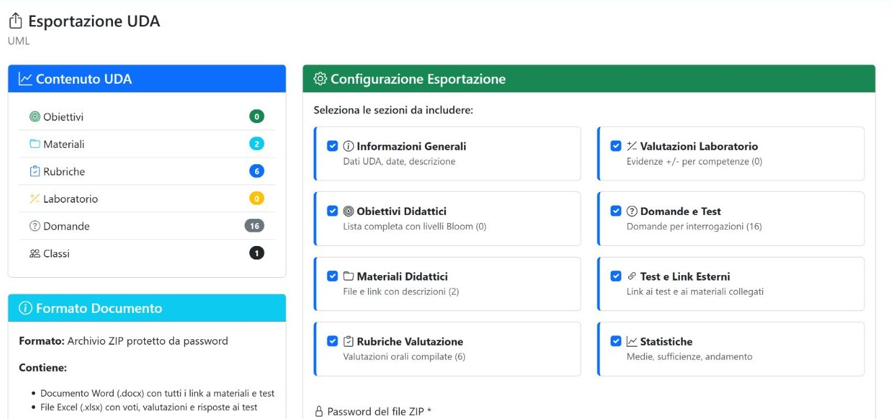

Capitolo 07 · conservare e condividere
Esportazione dell’UDA
La pagina prepara un archivio ZIP protetto da una password obbligatoria, con i contenuti selezionati dell’UDA. Le sezioni si possono includere o escludere.

Sezioni e opzioni
| Controllo | Effetto |
|---|---|
| Informazioni generali | Include i metadati e la descrizione dell’UDA. |
| Obiettivi | Include gli obiettivi associati all’unità. |
| Materiali | Include l’elenco e i riferimenti alle risorse. |
| Rubriche | Include gli indicatori e le rubriche didattiche previste. |
| Laboratorio | Include i dati della griglia e delle valutazioni pertinenti. |
| Domande | Include l’archivio delle domande associato. |
| Test | Include le prove e le attività collegate. |
| Statistiche | Include i riepiloghi disponibili nell’esportazione. |
| Seleziona tutto / Deseleziona tutto | Attiva o rimuove in blocco la selezione delle sezioni. |
| Password | È obbligatoria e deve contenere almeno quattro caratteri; serve ad aprire il pacchetto ZIP protetto, quindi conservala. |
| Genera Pacchetto ZIP protetto | Prepara il pacchetto protetto. Al termine compare il pulsante separato Scarica Pacchetto ZIP, che avvia il download. |
Esempio di esportazione
- Apri l’esportazione dalla scheda UML e controlla il titolo dell’unità.
- Seleziona le sezioni necessarie oppure usa Seleziona tutto.
- Inserisci e conserva una password di almeno quattro caratteri: è obbligatoria per creare e riaprire il pacchetto.
- Controlla le sezioni selezionate e le opzioni, poi premi Genera Pacchetto ZIP protetto.
- Quando la preparazione è terminata, premi Scarica Pacchetto ZIP per salvare il file.
L’archivio non è stato generato durante la ricognizione. La pagina consente di includere le sezioni attualmente disponibili e produce un file locale da conservare.